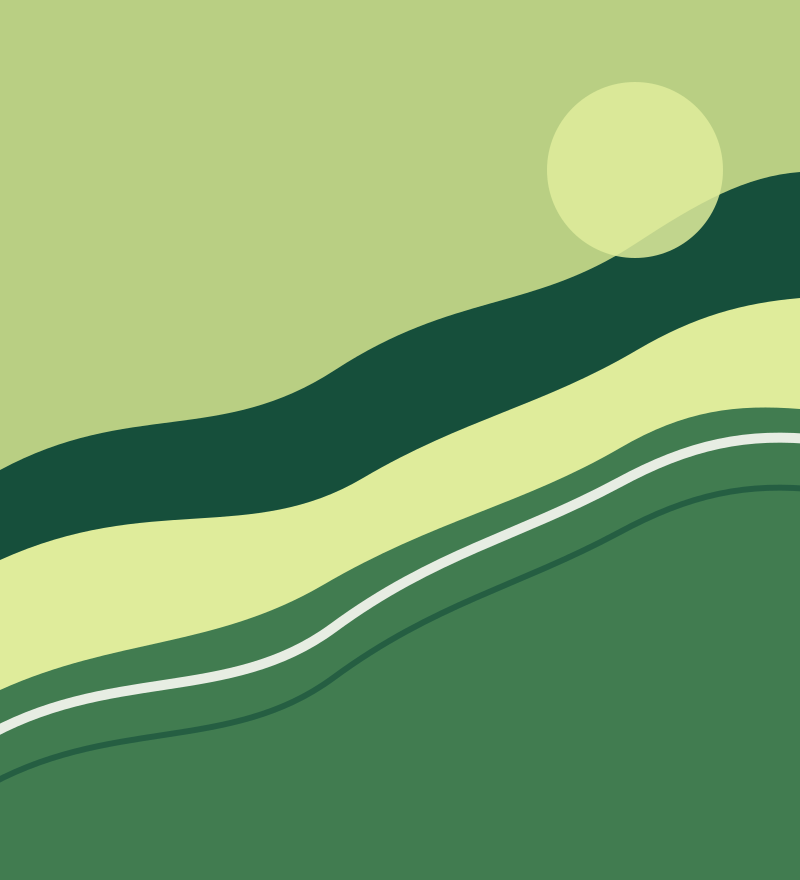

Ambiente
Difendere la biodiversità, ridurre il consumo di suolo e prenderci cura dell’acqua e degli spazi verdi.
ROVIGO E POLESINE
Dalla parte del territorio, della salute e delle persone. Uniamo ecologia e partecipazione civica per dare forma al cambiamento.
Radici nel Polesine. Uno sguardo al domani.

Ambiente · Diritti · Comunità · Futuro
CHI SIAMO
Europa Verde – Reti Civiche Rovigo è il progetto che mette al centro il legame tra ambiente e qualità della vita.
Crediamo in una politica locale capace di ascoltare, rendere comprensibili le scelte e coinvolgere le comunità. Vogliamo portare nel confronto pubblico proposte concrete, attenzione alle fonti e responsabilità verso chi abiterà questa terra dopo di noi.
La partecipazione parte da quiLE NOSTRE PRIORITÀ
Le scelte di oggi cambiano la vita di domani.
Da qui vogliamo partire.
Difendere la biodiversità, ridurre il consumo di suolo e prenderci cura dell’acqua e degli spazi verdi.
Dare priorità a rinnovabili, efficienza, accumuli e comunità energetiche, con scelte trasparenti.
Mettere la prevenzione e la qualità dell’aria al centro delle politiche per il benessere delle persone.
Valorizzare paesaggio, città e paesi. Promuovere mobilità sostenibile e cura dei luoghi che abitiamo.
Aprire il confronto, favorire l’accesso alle informazioni e costruire decisioni condivise.
DAL TERRITORIO
ENERGIA / LA NOSTRA POSIZIONE
Non bastano promesse di lavoro e sviluppo. Chiediamo un confronto sui costi, sulle alternative e sulle scelte che possono dare risultati al territorio.
Leggi l’articoloPER LA STAMPA
4 OTTOBRE 2026 / ENERGIA E TERRITORIO
Una sintesi pronta per la stampa: numeri, occupazione, tempi, costi e alternative per un confronto concreto sul futuro energetico del Polesine.
Leggi il comunicatoCONTATTI E PARTECIPAZIONE
Idee, domande, proposte: il confronto è il punto di partenza per costruire una comunità più consapevole.
Seguici sui nostri canali social per restare in contatto con Europa Verde – Reti Civiche Rovigo.
Europa Verde – Reti Civiche Rovigo
Rovigo e Polesine